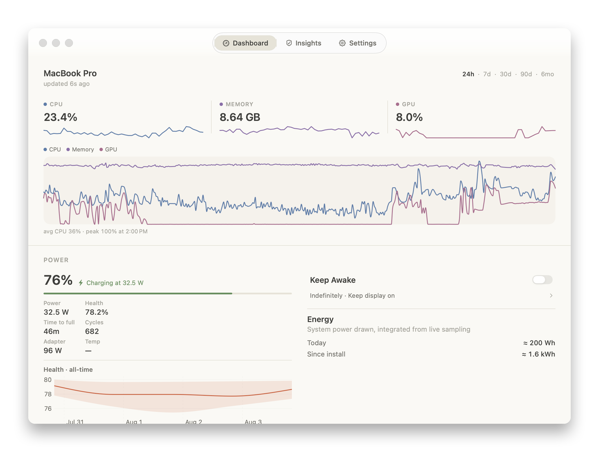
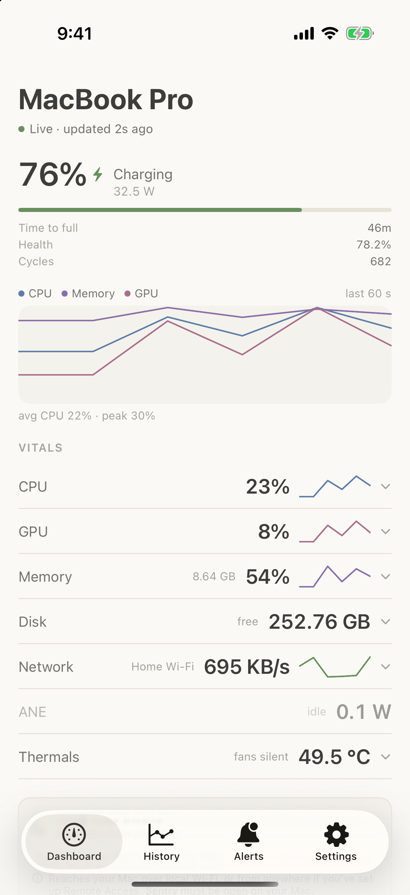
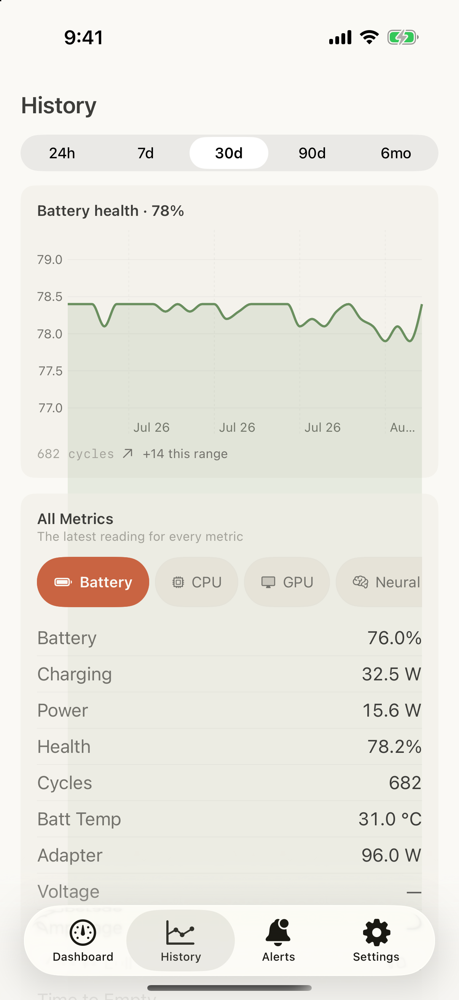
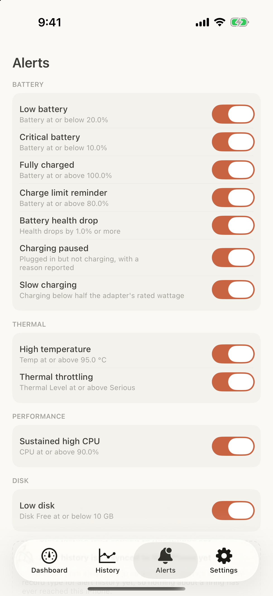
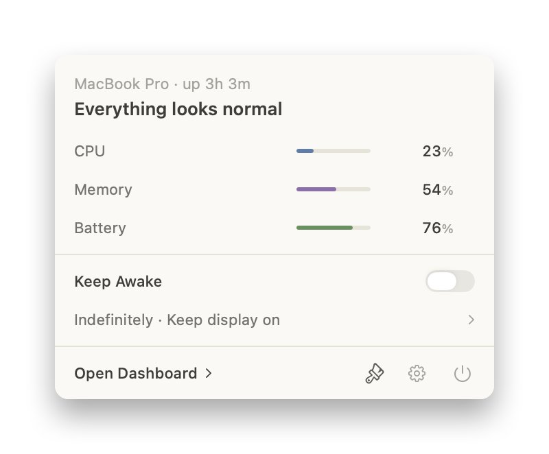
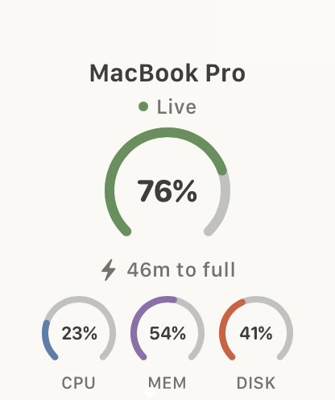

A macOS menu bar system monitor with iPhone and Apple Watch companions — your Mac's data goes to your devices, never to a server.
Download for MacmacOS 14+ · free
Signed & notarized by Apple · No accounts, zero telemetry · Open source (MIT)






The free tier is the full monitor, not a trial. No time limit, no nagging.
Monochrome, layout-configurable vitals in the menu bar, with a themed dropdown showing a system verdict at a glance.
Charts for CPU, memory, GPU, disk, network, temperatures, and fan RPM, backed by an on-device history store with tiered rollups.
Charge, wattage, voltage, cycle count, health, temperature, and the attached power adapter.
Threshold alerts on any metric, with a history of every time a rule fired.
Keep the Mac awake for a set duration — from the menu bar, your phone, or your watch.
Live sync over your own Wi-Fi (Bonjour) — plus widgets, complications, and Siri Shortcuts. No cloud in between.
Each with light, dark, and follow-the-system variants.
An MCP server and sentryctl CLI let coding agents check your
Mac's capacity before heavy work — with guardrails, per-client rate
limits, and a kill switch.
No accounts, no analytics, no telemetry, no server. Readings live in a database file on your own Mac.
One purchase, yours forever. No subscription.
$0
Free forever · open source (MIT)
macOS 14+ · free
$14.99 $19.99
Launch price · one-time purchase · licensed for 3 Macs · no subscription
Everything in Free is included
No mailing-list machinery yet — send a quick email and you'll be on the list for release announcements. Nothing else, ever.
Email to subscribe